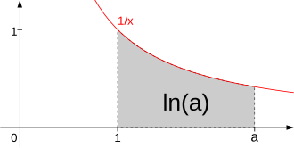
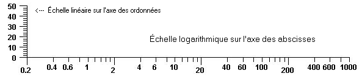

Une fonction logarithme est la fonction réciproque d’une exponentiation, c’est-à-dire que le
logarithme de base \(b\) d’un nombre réel strictement positif est la puissance à laquelle il
faut élever la base \(b\) pour obtenir ce nombre.
Le logarithme de base \(b\) du nombre \(x\) se note \(\log_b x\). Si la base est
évidente d’après le contexte, ou si elle n’a pas d’importance, on peut écrire simplement
\(\log x\).
Par définition, \( b^{\log_bx}=x \).
John Napier a développé les logarithmes au début du
xviie siècle. L’utilité du logarithme pour le calcul
vient du fait que la fonction logarithme transforme un produit en somme :
$$
\quad \log_{b}(x \cdot y) = \log_{b}x+\log_{b}y
$$
Pendant trois siècles, la table de logarithmes et la règle à calcul, fondée sur une échelle
logarithmique, ont servi pour le calcul, jusqu’à leur remplacement, dans le dernier quart
du xxe siècle, par des calculatrices électroniques.
Le logarithme permet en outre de présenter sous une forme concise des relations entre
nombres d’ordre de grandeur très différents.
Logarithmes d’usage courant
Trois fonctions logarithmes sont d’usage courant :
le logarithme népérien (ou naturel) dont la base est le nombre \(\mathrm{e}\), est
fondamental en analyse mathématique car il est la primitive de la fonction
\( x \mapsto \frac{1}{x} \) s’annulant en 1 et la fonction réciproque de la fonction
exponentielle ; il est souvent noté \(\ln\)
le logarithme décimal, dont la base est 10, reste le plus communément utilisé pour les
calculs dans le domaine technologique ainsi qu’en chimie pour le calcul de pH
le logarithme binaire, dont la base est 2, est utile en informatique théorique et pour
certains calculs appliqués
Motivation
Une échelle logarithmique permet de représenter sur un même graphique des nombres dont
l’ordre de grandeur est très différent. Les sciences appliquées les utilisent fréquemment
dans les formules, comme celles qui évaluent la complexité des algorithmes ou des fractales
et celles qui dénombrent les nombres premiers. Ils décrivent aussi les intervalles musicaux.
Propriétés des fonctions logarithmes
Propriétés algébriques
Pour tout réel \(b\) strictement positif et différent de 1, le logarithme de base
\(b\) : \(\log_b\) est la fonction continue définie sur \(\mathbb{R}^{+*}\) vérifiant
l’équation fonctionnelle :
$$
\quad \log_b(x\cdot y)=\log_bx+\log_by \quad \forall x,y \in \mathbb{R}^{+*}
$$
et
$$
\quad \log_b(b)=1
$$
Cette définition permet de déduire rapidement les propriétés suivantes :
$$
\quad \begin{align}
& \log_b(1)=0 \\
& \log_b\left(\frac{x}{y}\right)=\log_bx-\log_by \\
& \log_b(x^y)=y\log_bx \\
& \log_b(b^n)=n \quad \forall n \in \mathbb{Z} \\
& \log_b(b^r)=r \quad \forall r \in \mathbb{Q}
\end{align}
$$
Changement de base
Deux fonctions logarithmes ne diffèrent que d’une constante multiplicative : pour
tous réels strictement positifs \(a\) et \(b\) différents de 1 et pour tout réel \(x\gt0\),
$$
\quad \log_b(x) = \frac{log_a(x)}{log_a(b)}
$$
Toutes les fonctions logarithmes peuvent donc s’exprimer à l’aide d’une seule, par exemple
la fonction logarithme népérien : pour tout réel strictement positif \(b\) différent
de 1 et pour tout réel \(x\gt0\),
$$
\quad \log_b(x) = \frac{\ln(x)}{\ln(b)}
$$
Dérivée
La fonction \(\log_b\) est dérivable sur \(\mathbb{R}^{+*}\) de dérivée :
$$
{\log_{b}}'(x)=\frac{1}{x\ln(b)}
$$
Elle a le même signe que \(\ln(b)\). Donc la fonction \(\log_b\) est strictement monotone,
croissante quand \(b\) est supérieur à 1, décroissante dans le cas contraire.
Logarithme népérien
Le logarithme naturel ou népérien est dit de base \(\rm{e}\) car \(\ln(\rm{e}) = 1\).
Primitive de la fonction inverse
La fonction \( x \mapsto \frac{1}{x} \) est continue sur \(\left ]0, +\infty \right[\).
Elle admet donc des primitives dont une seule s’annule en 1. Cette primitive est appelée
logarithme népérien ou logarithme naturel et est donc définie par :
$$
\quad \forall x \in \mathbb{R}^{+*} \quad \ln(x) = \int_{1}^{x}{\frac{1}{t}dt}
$$
Pour tout réel \(a \gt 0\), \(\ln(a)\) peut être défini comme l’aire du domaine délimité par
la courbe représentative de la fonction \( x \mapsto \frac{1}{x} \), l’axe des abscisses et
les droites d’abscisses \(1\) et \(a\).

La fonction logarithme naturel comme primitive de la fonction
inverse
Étude de la fonction
La fonction logarithme népérien est définie et dérivable (donc continue) sur
\(\left ]0, +\infty \right[\) et pour tout réel \(x\) strictement positif :
$$
\quad \ln'(x) = \frac{1}{x}
$$
Puisque cette dérivée est strictement positive, le logarithme népérien est strictement
croissant.
Puisque cette dérivée est strictement décroissante, le logarithme népérien est strictement
concave.
Les limites de la fonction aux bornes de son intervalle de définition sont :
$$
\quad \lim \limits_{x \to 0^+}\ln(x)=-\infty
$$
et
$$
\quad \lim \limits_{x \to +\infty}\ln(x)=+\infty
$$
C’est donc une bijection de \(\mathbb{R}^{+*}\) sur \(\mathbb{R}\).
Réciproque de la fonction exponentielle
L’étude de la fonction logarithme népérien a montré que c’est une bijection de
\(\mathbb{R}^{+*}\) dans \(\mathbb{R}\). Sa bijection réciproque, de \(\mathbb{R}\) dans
\(\mathbb{R}^{+*}\), coïncide avec la fonction exponentielle, puisqu’elle est sa propre
dérivée et prend la valeur \(1\) en \(0\). Ceci fournit une définition possible de la
fonction exponentielle à partir du logarithme. Inversement, on aurait pu définir le
logarithme comme la bijection réciproque de l’exponentielle.
Autrement dit :
$$
\quad \forall x \in \mathbb{R}^{+*} \quad \mathrm{e}^{\ln(x)} = x
$$
et
$$
\quad \forall y \in \mathbb{R} \quad \ln(\mathrm{e}^y) = y
$$
Ce qui se résume en :
$$
\quad \forall x \in \mathbb{R}^{+*}, \forall y \in \mathbb{R}
\quad y = \ln(x) \Leftrightarrow x = \mathrm{e}^y
$$
et permet de résoudre des équations dans lesquelles l’inconnue apparaît en exposant.
Cette relation permet d’exprimer toutes les autres fonctions exponentielles de base un réel
\(a\) strictement positif par (pour tout réel \(x\)) :
$$
\quad a^x = \mathrm{e}^{x\ln(a)}
$$
Propriétés complémentaires
Étude des limites
Les limites suivantes permettent de déterminer les croissances comparées du logarithme
népérien et d’une fonction puissance quelconque, \(\forall \alpha \gt 0\) :
$$
\quad \lim \limits_{x \to 0^+} x^{\alpha }\ln(x) = 0
$$
et
$$
\quad \lim \limits_{x \to +\infty} \frac{\ln(x)}{x^{\alpha}} = 0
$$
Primitive
En appliquant la formule d’intégration par parties au produit des fonctions \(\ln\) et
\( x \mapsto 1 \), on obtient :
$$
\quad \forall x \gt 0 \quad \int_{1}^{x} \ln(t)dt = x\ln(x) - x + 1
$$
D’après le théorème fondamental de l’analyse, les primitives de \(\ln\) sont donc les
fonctions de la forme :
$$
\quad x \mapsto x\ln(x)-x+k,\quad k \in \mathbb{R}
$$
la plus simple étant la fonction \(x \mapsto x\ln(x)-x\).
Logarithme décimal
Le logarithme décimal ou \(\log_{10}\) ou simplement \(\log\) (parfois appelé logarithme
vulgaire) est le logarithme de base dix. Il est défini pour tout réel strictement positif
\(x\).
Mantisse et caractéristique
Les logarithmes des puissances entières de 10 se calculent aisément en utilisant la règle de
conversion d’un produit en somme :
$$
\quad \begin{align}
& \log(10)=1 \\
& \log(100)=\log(10 \times 10)=\log(10)+ \log(10)=2 \\
& \log(1000)=3 \\
& \log(0,1)=\log\left(\frac{1}{10}\right)=-\log(10)=-1 \\
& \log(0,01)=-2 \\
& \log(0,001)=-3 \\
& \log(10^{n})=n
\end{align}
$$
Les propriétés arithmétiques des logarithmes permettent de déduire la valeur de tout
logarithme pourvu que soient connus les logarithmes de tous les nombres compris entre 1 et
10 (exclu). En effet, tout nombre \(x\) peut s’écrire sous la forme \(a \times 10^n\) où
\(a\) est un nombre compris entre 1 et 10 (exclu). Cette écriture s’appelle la notation
scientifique de \(x\). \(10^n\) représente alors l’ordre de grandeur du nombre \(x\).
Prennons par exemple : \(120=1,2\times10^2\) et \(0,00314=3,14\times10^{-3}\).
Le passage au logarithme décimal va alors mettre en évidence les deux éléments de l’écriture
scientifique du nombre :
De manière générale :
$$
\quad \log(x) = \log(a\times10^n) = n + \log(a)
$$
Puisque la fonction \(\log\) est croissante, pour tout réel \(a\) compris entre 1 et 10
(exclu), \(\log(a)\) est compris entre 0 et 1. L’entier relatif \(n\) est donc la partie
entière de \(\log(x)\) et \(\log(a)\) la partie décimale à ajouter à \(n\) pour obtenir
\(\log(x)\).
La partie entière de \(\log(x)\) est appelée caractéristique du log.
La partie décimale à rajouter à la partie entière s’appelle mantisse.
La lecture du logarithme d’un nombre permet alors aisément de déterminer son ordre de
grandeur : \(\log(x)=5,3\).
Sa caractéristique est \(5\) donc \(x\) est de la forme \(a \times 10^5\). Sa mantisse est
\(0,3\) qui est proche de \(\log(2)\). \(x\) est donc proche de \(2 \times10^5\).
Usage
Le développement des calculatrices de poche a fait perdre aux logarithmes leur principal
intérêt de simplification des calculs. Ils restent cependant très présents en physique
quand il s’agit d’appréhender des quantités pouvant varier de \(10^{−10}\) à \(10^{10}\).
C’est ainsi qu’on les retrouve dans le calcul des pH (potentiel hydrogène), des décibels,
etc.
Calculer avec une table de logarithmes
L’idée directrice est de remplacer, pour l’utilisateur, les multiplications par des
additions, les divisions par des soustractions, les puissances par des produits, les racines
n-ièmes par des divisions par \(n\).
Exemple 1 :
En supposant que \(x=435,728\) et \(y=1,6275\) comment effectuer, sans calculatrice, le
produit \(x \times y\) ?
On calcule \(\log(x)\). \(x=4,35728 \times 10^2\) donc la caractéristique est 2, la mantisse
se lit dans une table de logarithme : \(0,6392\).
\(\log(x)=2,6392\)
On calcule \(\log(y)\). Caractéristique \(0\), mantisse \(0,2115\).
\(\log(y)=0,2115\)
Il suffit de calculer \(\log(x \times y)=\log(x)+\log(y)=2,8507\), d’isoler la
caractéristique \(2\) et la mantisse \(0,8507\) qui par lecture inverse dans la table de
log donne \(7,091\).
Le produit \(x \times y\) est donc environ \(7,091 \times 10^2=709,1\).
Les échelles logarithmiques
Elles sont utilisées pour représenter des phénomènes pouvant varier par exemple de
\(10^{−10}\) à \(10^{10}\). Elles permettent d’amplifier les variations des valeurs proches
de \(0\) et de rendre moins importantes les variations pour les grands nombres, en mettant
en évidence plutôt les variations relatives.

Illustration de graphique à deux échelles.
Le pH
Le pH d’une solution donne le cologarithme de sa concentration en ions oxonium :
\(\mathrm{pH} =-\log{\big[}\mathrm{H}_{3}\mathrm{O^+}{\big]}\).
Le pH de l’eau pure est de 7, ce qui signifie qu’il y a \(10^{-7}\) mole de
\(\mathrm{H_3}\mathrm{O^+}\) dans un litre d’eau.
Le pH du jus de citron est de 2,4, ce qui signifie qu’il y a \(10^{-2,4}=4\times 10^-3\)
mole de \(\mathrm{H_3}\mathrm{O^+}\) dans un litre de jus de citron.
On remarque qu’un pH faible correspond à une concentration élevée de
\(\mathrm{H_3}\mathrm{O^+}\) donc à un milieu acide.